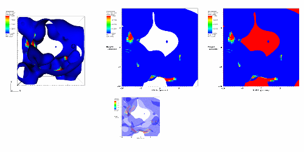

Sometimes is is useful to project complex surfaces into 2D and resample them onto a 2D mesh so queries and other analysis can be performed.
When you project a complex surface to 2D using the Project operator, all of a plot's geometry remains and its Z coordinates are set to zero. This results in some areas where the plot is essentially crushed on top of itself, as shown in figure. When resampling the plot onto a new 2D grid, these overlapping areas can be treated in three different ways. You can ensure that the top value is taken if you choose the random option by clicking on the random button in the Resolve ties button group. You can use a mask variable to decide ties by clicking on the largest or smallest buttons and by selecting an appropriate variable using the Variable to resolve ties menu.
|  |
| Figure 52 |